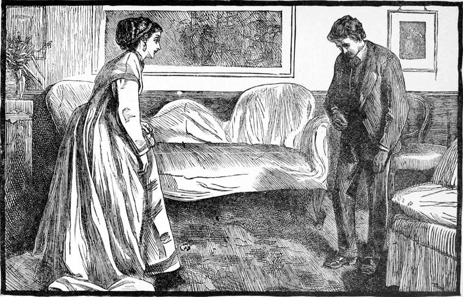

"Couldn't you get a holiday on Saturday, Tom?" said Mr. Worboise. "I mean to have one, and I should like to take you with me."
"I don't know, father," answered Tom, who did not regard the proposal as involving any great probability of enjoyment; "my holiday is coming so soon that I should not like to ask for it, especially as Mr. Stopper—"
"What about Mr. Stopper? Not over friendly, eh? He is not a bad fellow, though, is Stopper. I'll ask for you, if you like that better."
"I would much rather you wouldn't, father."
"Pooh, pooh! nonsense, man! It's quite a different thing if I ask for it, you know."
Thomas made no further objection, for he had nothing at hand upon which to ground a fresh one; nor, indeed, could he well have persisted in opposing what seemed a kind wish of his father. It was not, however, merely because they had little to talk about, and that Thomas always felt a considerable restraint in his father's presence—a feeling not very uncommon to young men—but he lived in constant dread of something coming to light about Lucy. He feared his father much more than he loved him; not that he had ever been hardly treated by him; not that he had ever even seen him in a passion, for Mr. Worboise had a very fair command of his temper; it was the hardness and inflexibility read upon his face from earliest childhood, that caused fear thus to overlay love. If a father finds that from any cause such is the case, he ought at once to change his system, and to require very little of any sort from his child till a new crop has begun to appear on the ill-farmed ground of that child's heart.
Now the meaning of the holiday was this: Mr. Worboise had a city-client—a carpet-knight—by name Sir Jonathan Hubbard, a decent man, as the Scotch would say; jolly, companionable, with a husky laugh, and friendly unfinished countenance in which the color was of more weight than the drawing—for, to quote Chaucer of the Franklin, "a better envined man," either in regard of body or cellar, "was nowhere none;" upon Sir Jonathan's sociability Mr. Worboise had founded the scheme of the holiday. Not that he intended to risk any intrusion—Mr. Worboise was far too knowing a man for that. The fact was that he had appointed to wait upon his client at his house near Bickley on that day—at such an hour, however, as would afford cover to his pretense of having brought his son out with him for a holiday in the country. It was most probable that Sir Jonathan would invite them to stay to dinner, and so to spend their holiday with him. There was no Lady Hubbard alive, but there was a Miss Hubbard at the head of the house; and hence Mr. Worboise's strategy. Nor had he reckoned without his host, for if Sir Jonathan was anything he was hospitable; things fell out as the lawyer had forehoped, if not foreseen. Sir Jonathan was pleased with the young fellow, would not allow him to wait companionless in the drawing-room till business was over—sent, on the contrary, for his daughter, and insisted on the two staying to dinner. He was one of those eaters and drinkers who have the redeeming merit of enjoying good things a great deal more in good company. Sir Jonathan's best port would seem to him to have something the matter with it if he had no one to share it. If, however, it had come to the question of a half-bottle or no companion, I would not answer for Sir Jonathan. But his cellar would stand a heavy siege.
Thomas was seated in the drawing-room, which looked cold and rather cheerless; for no company was expected, and I presume Miss Hubbard did not care for color, save as reflected from her guests, seeing she had all her furniture in pinafores. How little some rich people know how to inherit the earth! The good things of it they only uncover when they can make, not receive, a show.
My dear reader—No, I will not take a liberty to which I have no right; for perhaps were he to see me he would not like me, and possibly were I to meet him I should not like him: I will rather say My Reader, without the impertinence or the pledge of an adjective—have a little patience while I paint Miss Hubbard just with the feather-end of my pen. I shall not be long about it.
Thomas sat in the drawing-room, I say, feeling vacant, for he was only waiting, not expecting, when the door opened, and in came a fashionable girl—rather tall, handsome, bright-eyed, well-dressed, and yet—What was it that Thomas did not like about her? Was it that she was dressed in the extreme of the fashion? I will not go on to say what the fashion was, for before I had finished writing it, it would have ceased to be the fashion; and I will not paint my picture knowingly with colors that must fade the moment they are laid on. To be sure she had ridden the fashion till it was only fit for the knacker's yard; but she soon made him forget that, for she was clever, pleasant, fast—which means affectedly unrefined, only her affectation did no violence to fact—and altogether amusing. I believe what Thomas did not like about her at first was just all wherein she differed from Lucy. Yet he could not help being taken with her; and when his father and Sir Jonathan came into the room, the two were talking like a sewing-machine.

"Laura, my dear," said the knight, "I have prevailed on Mr. Worboise to spend the day with us. You have no engagement, I believe?"
"Fortunately, I have not, papa."
"Well, I'll just give orders about dinner, and then I'll take our friends about the place. I want to show them my new stable. You had better come with us."
Sir Jonathan always ordered the dinner himself. He thought no woman was capable of that department of the household economy. Laura put on her hat—beautiful with a whole king-fisher—and they went out into the grounds to the stable—trim as her drawing-room—where her favorite horse ate apples out of her pocket; from the stable to the hothouses and kitchen-garden; then out at a back door into the lane—shadowy with trees—in which other colors than green were now very near carrying the vote of the leaves. Sweet scents of decay filled the air, waved about, swelling and sinking, on the flow of a west wind, gentle and soft, as if it had been fanned from the wings of spring when nearest to summer. Great white clouds in a brilliant sky tempered the heat of the sun. What with the pure air, the fine light, and the handsome girl by his side, Thomas was in a gayer mood than had been his for many a long day. Miss Hubbard talked plenteously—about balls and theatres and Mansion House dinners, about Rotten Row, and St. James's; and although of all these Thomas knew very little, yet being quick and sympathetic, he was able to satisfy the lady sufficiently to keep her going. He was fortunate enough, besides, to say one or two clever things with which she was pleased, and to make an excellent point once in a criticism upon a girl they both knew, which, slighting her, conveyed, by no very occult implication, a compliment to Miss Hubbard. By the time they had reached this stage of acquaintanceship, they had left stout Sir Jonathan and Mr. Worboise far behind; but Miss Hubbard was not in the least danger of being made uncomfortable by any squeamish notions of propriety; and, having nothing more amusing to do, and being out already, she proposed that they should go home by a rather longer road, which would lead them over a hill whence they would get a good view of the country.
"Do you like living in the country, Miss Hubbard?"
"Oh! dear no. London for me. I can't tell what made papa come to this dull place."
"The scenery is very lovely, though."
"People say so. I'm sure I don't know. Scenery wasn't taught where I went to school."
"Were you taught horses there?" asked Thomas, slyly.
"No. That comes by nature. Do you know I won this bracelet in a handicap last Derby?" she said, showing a very fine arm as well as bracelet, though it was only the morning, so-called.
Miss Hubbard had no design upon Thomas. How could she have? She knew nothing about him. She would have done the same with any gentleman she liked well enough to chatter to. And if Thomas felt it and thought that Laura Hubbard was more entertaining than sober Lucy Burton, he made up to Lucy for it in his own idea by asserting to himself that, after all, she was far handsomer than Miss Hubbard, handsome as she was. Yet I should never think of calling Lucy handsome. She was lovely—almost beautiful, too. Handsome always indicates more or less vulgarity—no, I mean commonness—in my ears. And certainly, whatever she might be capable of, had she been blessed with poverty, Miss Hubbard was as common as she was handsome. Thomas was fool enough to revert to Byron to try his luck with that. She soon made him ashamed of showing any liking for such a silly thing as poetry. That piqued him as well, however.
"You sing, I suppose?" he said.
"Oh, yes, when I can't help it—after dinner, sometimes."
"Well, you sing poetry, don't you?"
"I don't know. One must have some words or other just to make her open her mouth. I never know what they're about. Why should I? Nobody ever pays the least attention to them—or to the music either, except it be somebody that wants to marry you."
But why should I go further with the record of such talk? It is not interesting to me, and, therefore, can hardly be so to my reader. Even if I had the art to set it forth aright, I hope I should yet hold to my present belief, that nothing in which the art is uppermost is worth the art expended upon it.
Thomas was a little shocked at her coolness, certainly; but at the same time that very coolness seemed a challenge. Before they had reached the house again, he was vexed to find he had made no impression upon Miss Hubbard.
Farewell to such fencing. By the time he had heard her sing, and his father and he were on their way home again, I am glad to say that Thomas had had nearly enough of her. He thought her voice loud and harsh in speech, showy and distressing in song, and her whole being bravura. The contrasts in Lucy had come back upon him with a gush of memorial loveliness; for, as I have said, she still held the fortress of his heart, and held it for its lawful owner.
Scarcely were they seated in the railway carriage, of which they were the sole occupants, when the elder Worboise threw a shot across the bows of the younger.
"Well, Tom, my boy," he said, rubbing his lawyer palms, "how do you like Miss Hubbard?"
"Oh, very well, father," answered Thomas, indifferently. "She's a very jolly sort of girl."
"She's worth a hundred thousand," said his father, in a tone that would have been dry but for a touch of slight resentment at the indifference, possibly in the father's view irreverence, with which he spoke of her.
"Girls?" asked Thomas.
"Pounds," answered his father, clenchingly.
Tom was now convinced of his father's design in taking him out for a holiday. But even now he shrunk from confession. And how did he justify his sneaking now? By saying to himself, "Lucy can't have anything like that money; it won't do. I must wait a more fitting opportunity." But he thought he was very brave indeed, and actually seizing the bull of his father's will by the horns when he ventured to take his meaning for granted, and replied:
"Why, father, a fellow has no chance with a girl like that, except he could ride like Assheton Smith, and knew all the slang of the hunting-field as well as the race-course."
"A few children will cure her of that," said his father.
"What I say is," persisted Thomas, "that she would never look at a clerk."
"If I thought you had any chance, I would buy you a commission in the Blues."
"It wants blue blood for that," said Thomas, whose heart, notwithstanding, danced in his bosom at the sound of commission. Then, afraid lest he should lose the least feather of such a chance, he added hastily, "But any regiment would do."
"I dare say," returned his father, at right angles. "When you have made a little progress it will be time enough. She knows nothing about what you are now. Her father asked me, and I said I had not made up my mind yet what to do with you."
"But, as I said before," resumed Thomas, fighting somewhat feebly, "I haven't a chance with her. She likes better to talk about horses than anything else, and I never had my leg across a horse's back in my life—as you know, father," he added in a tone of reproach.
"You mean, Tom, that I have neglected your education. Well, it shall be so no longer. You shall go to the riding-school on Monday night. It won't be open to-morrow, I suppose."
I hope my reader is not so tired of this chapter as I am. It is bad enough to have to read such uninteresting things—but to have to write them! The history that is undertaken must be written, however, whether the writer weary sometimes of his task, or the interest of his labor carry him lightly through to the close.
Thomas, wretched creature, dallied with his father's proposal. He did not intend accepting it, but the very idea of marrying a rich, fashionable girl like that, with a knight for a father, flattered him. Still more was he excited at the notion, the very possibility of wearing a uniform. And what might he not do with so much money? Then, when the thought of Lucy came, he soothed his conscience by saying to himself, "See, how much I must love her when I am giving up all this for her sake!" Still his thoughts hovered about what he said he was giving up. He went to bed on Sunday night, after a very pathetic sermon from Mr. Simon, with one resolution, and one only, namely, to go to the riding-school in Finsbury on Monday night.
But something very different was waiting him.